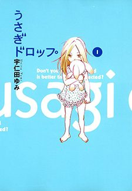

Bunny Drop
うさぎドロップ
At his grandfather's funeral, 30-year-old Daikichi learns the old man left behind a six-year-old daughter, Rin. No one else will take her, so he does.
After the anime, read the manga from Chapter 25.
8.1AniList score
—Animeter, no votes yet
11episodes
Rate it or report where you stopped
Anime finished. Where does the manga pick up?
Start at Chapter25
The anime ends at chapter 24 (the end of volume 4), covering only the first, parenting half of the story. The second half, after a 10-year time skip, starts at chapter 25 and is manga-only.
12462 end
Season 1Start reading here